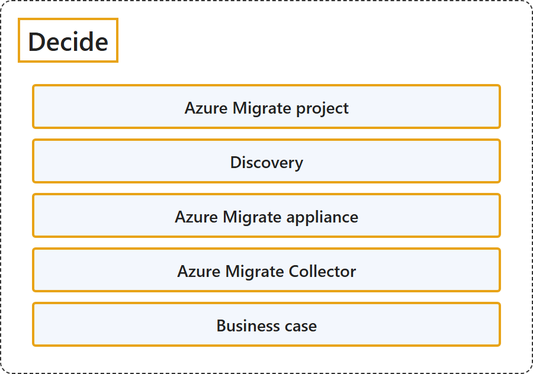

24.2 Decide
Classification

Glossary
| Term | Definition | 中文解释 | Source |
|---|---|---|---|
| Decide 决定 |
"The first step in a migration journey is to identify your workloads. This process of identification is called discovery." | 迁移之旅的第一步是识别你的工作负载。这个识别过程称为发现。 | Microsoft, n.d., "Decide" section, para. 1 |
| Azure Migrate project Azure Migrate 项目 |
"A project is used to store discovery, assessment, and migration metadata collected from the environment you're assessing or migrating. In a project, you can track discovered assets, create assessments, and orchestrate migrations to Azure." | 项目用于存储发现、评估和迁移元数据，这些元数据收集自你正在评估或迁移的环境。在项目中，你可以跟踪已发现的资产、创建评估，并编排到 Azure 的迁移。 | Microsoft, 2026, para. 2 |
| Discovery 发现 |
"This process of identification is called discovery. To discover your workloads, you can deploy a lightweight Azure Migrate appliance (recommended approach), deploy Azure Migrate collector or quickly import the inventory data for your workloads." | 这个识别过程称为发现。要发现你的工作负载，你可以部署轻量级 Azure Migrate 设备（推荐方式）、部署 Azure Migrate 收集器，或者快速导入工作负载的清单数据。 | Microsoft, n.d., "Decide" section, para. 1 |
| Azure Migrate appliance Azure Migrate 设备 |
"The Azure Migrate appliance is a virtual appliance that can be deployed on a server in your datacenter. The appliance collects the configuration and performance data for your servers and continually sends it to the Azure Migrate service." | Azure Migrate 设备是一种虚拟设备，可以部署在你数据中心的服务器上。该设备收集服务器的配置和性能数据，并持续发送到 Azure Migrate 服务。 | Microsoft, n.d., "Decide" section, para. 2 |
| Azure Migrate Collector Azure Migrate 收集器 |
"Azure Migrate Collector enables a quick snapshot discovery of your on-premises environment without requiring continuous Azure connectivity." | Azure Migrate 收集器可对本地环境进行快速快照式发现，无需持续连接 Azure。 | Microsoft, n.d., "Decide" section, "Azure Migrate Collector", para. 1 |
| Business case 业务案例 |
"A business case helps you estimate the costs and savings of moving to Azure." | 业务案例帮助你估算成本和节省，针对的是迁移到 Azure。 | Microsoft, n.d., "Decide" section, para. 4 |
References
- Microsoft. (n.d.). About Azure Migrate. Microsoft Learn. Retrieved October 18, 2026, from https://learn.microsoft.com/en-us/azure/migrate/migrate-services-overview
- Microsoft. (2026, May 20). Quickstart: Create an Azure Migrate project using portal. Microsoft Learn. https://learn.microsoft.com/en-us/azure/migrate/quickstart-create-project?view=migrate